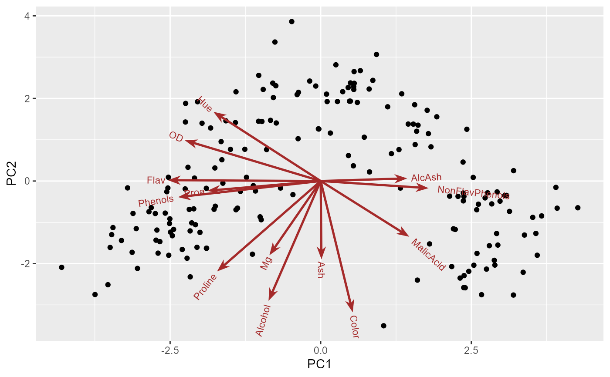

`ggvector()` draws one or more vectors from a common origin, as arrows and/or text labels, using [ggarrow::geom_arrow_segment()] to draw the arrows. It is used internally by [ggbiplot()] to draw the variable vectors, but it can also be used on its own to add extra vectors (e.g., supplementary variables) to an existing plot.
Usage
ggvector(
x,
y,
label = NULL,
geom.var = c("arrow", "text"),
scale = 1,
origin = c(0, 0),
color = "black",
linewidth = 0.9,
arrow_head = ggarrow::arrow_head_wings(),
length = 4,
gap = 0,
adjust = 1.25,
size = 3,
lineheight = 0.75,
...
)Arguments
- x, y
coordinates of the vector ends
- label
optional text labels for the vector ends. If `NULL`, no labels are drawn.
- geom.var
character vector specifying what to draw: any of `"arrow"`, `"text"`
- scale
scale factor applied to `x` and `y` before drawing
- origin
origin of the vectors, a vector `c(x, y)`
- color
color for the vectors and their labels
- linewidth
linewidth for the vector arrows. Default `0.9` — thinner than the shaft width `grid::arrow()` used pre-`ggarrow` (`1.4`), because [ggarrow::arrow_head_wings()]'s default ornament reads visually heavier than the old plain triangular arrowhead at the same linewidth.
- arrow_head
an arrowhead ornament, e.g., from [ggarrow::arrow_head_wings()] or [ggarrow::arrow_head_line()], passed to [ggarrow::geom_arrow_segment()]
- length
length of the arrowhead; passed to [ggarrow::geom_arrow_segment()]
- gap
distance to pull the arrowhead back from the vector's true endpoint, passed as `resect_head` to [ggarrow::geom_arrow_segment()]. Given as a plain number, this is in **millimeters** — a fixed physical distance on the drawn plot, *not* in the (arbitrary) data units of `x`/`y` — so the same `gap` looks bigger or smaller depending on plot size/scale. Can also be a [grid::unit()] object for other units. Useful to keep arrowheads clear of a correlation circle or of crowded labels; does not move the label itself, which is still placed at the true `(x, y)` endpoint. Default `0` (no gap; arrowhead tip touches the endpoint).
- adjust
adjustment factor for label placement, >= 1 means farther from the arrowhead
- size
text size for labels
- lineheight
line height for (possibly multi-line) labels
- ...
other arguments passed to [ggarrow::geom_arrow_segment()]
Details
The arrowhead size (`length`) scales with `linewidth`, not with the data-space length of the vectors. If several short vectors point in similar directions, a `scale` too small relative to `length`/`linewidth` can make the arrowheads overlap into a cluttered mass near `origin` — scale the vectors up (as [ggbiplot()] does internally, relative to the spread of the point scores) so the heads don't dominate the shafts.
Examples
data(wine)
library(ggplot2)
wine.pca <- prcomp(wine, scale. = TRUE)
# scale loadings up so vectors are comparable in length to the point scores
v <- as.data.frame(6 * wine.pca$rotation[, 1:2])
ggplot(as.data.frame(wine.pca$x), aes(PC1, PC2)) +
geom_point() +
ggvector(v$PC1, v$PC2, label = rownames(v), color = "brown")
